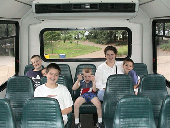

 If I remember correctly the tour guide mentioned the land for the Wilds is reclaimed strip mines. If that is correct, you can't tell at all that it might have been a strip mine. There were mature trees, ponds, and beautiful green fields. They have done a wonderful job reclaiming the land.
The bus ride through the fields takes about an hour. On our trip we saw camels, rhinos, giraffs, bison, and other animals. It sounds like I will have to watch our video again to see which ones I missed. Going through the pictures I see I didn't take any pictures of the animals, only video.
After the Wilds, we drove back to Zanesville to find a place for a picnic. We drove through town looking for a park, but we never came across one. So, finally we stopped at a yard sale to ask about a park. The people there couldn't come up with any parks. I was amazed. Zanesville is a decent sized city. Certainly that had at lease one park. Finally they came up with a park and they gave us directions. However, they did warn us not to go there after dark.
When we found the park, I knew why they hesitated so much to give us directions. It was not a nice park. I would be ashamed to tell people about it also. The park was along the river, out of the way where no one paid any attention to it. It looked run down and uncared for. There were few picnic tables, no park benches, and I saw maybe one trash can.
We found an unocuppied picnic table and sat down to eat. We were instantly bothered by a stray dog. It was friendly. But it was not one you wanted to touch. It was dirty and covered with sores (ticks?). We didn't stay long for lunch.
One the way back home, we stopped near Utica, Ohio where the Velvet Ice Cream factory is. There they have restored an old mill where they now serve their ice cream. They also give tours of the factory. The factory was closed on Saturday, but they let us look around anyway. I was surprised at how small it was. It doesn't take much room at all to make ice cream, I guess.
After an ice cream cone we called it a day and headed for home.
{kind=link}
{kind=link}
{kind=link}
{kind=link}